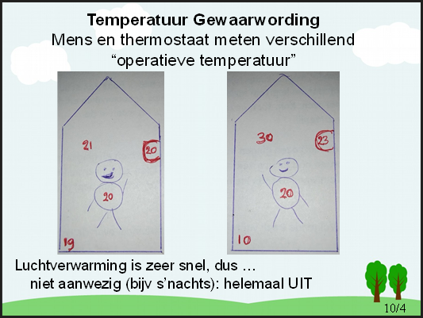

31 May, 2024
Om te begrijpen waarom luchtverwarming zo razend snel reageert, moet je begrijpen hoe wij als persoon temperatuur ervaren. Wij ervaren temperatuur als het gemiddelde van de wand-temperatuur en de lucht-temperatuur.

Links een situatie met gewone radiatoren. We hebben het pas comfortabel als zowel de lucht-temperatuur als ook de wand temperatuur ongeveer 20 graden is. Dat betekent in een koud huis dat we een aantal uren zullen moeten wachten totdat de wanden zijn opgewarmd.
Rechts een situatie met luchtverwarming na in de winter een week uit huis geweest te zijn. De muren zijn afgekoeld tot 10 graden. Maar omdat de luchttemperatuur een enekele minuten kan worden opgewarmd tot 30 graden, ervaren wij het gemiddelde van 10 en 30 graden, en dat is dus 20 graden en dat is comfortabel.
De persoon ervaart in beide gevallen 20 graden Celsius, en het dus comfortabel vindt. De thermostaat ervaart iets anders omdat deze 2/3 luchttemperatuur en 1/3 wand temperatuur als "de temperatuur" weergeeft.
Links geeft de thermostaat dus 20 graden aan, rechts 23 graden !!
Dit is wel belangrijk, want dat betekent dat als u in een koud huis komt en het snel warm wilt hebben, enerzijds de luchtverwarming in de boost mode zet en anderzijds de thermostaat niet op 20 moet zetten, maar een tijdje op bijvoorbeeld 25 !!!
Als je nu kijkt naar het warmtelek, dan is dat links veeel groter dan rechts, want de gemiddelde temperatuur van het huis links is veel hoger dan de gemiddelde temperatuur rechts.
Created with OneNote.